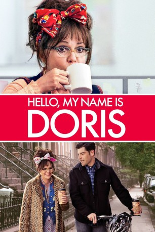
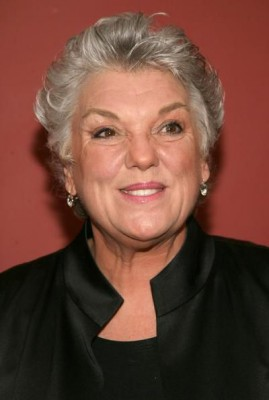
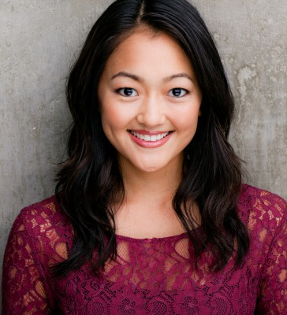

#4642 Hello, My Name Is Doris
 
 IMDB-Wertung: 6.7 / 10
IMDB-Wertung: 6.7 / 10  Metascore: 0
Metascore: 0 
Die unscheinbare Doris (Sally Field) besucht ein Motivations-Seminar, um endlich mit mehr Selbstbewusstsein durchs Leben zu gehen. Das braucht sie ganz besonders im Umgang mit ihrem jüngeren Kollegen John (Max Greenfield), in den sie sich verliebt hat. Beflügelt vom Selbsthilfeguru, beschließt Doris der Liebe eine Chance zu geben. Als sie endlich Mut fasst, John ihre Gefühle zu gestehen, nimmt die Geschichte eine erstaunliche Wendung. HELLO MY NAME IS DORIS ist eine geistreiche und feinfühlige Komödie über eine SixtySomething, die lernt, dass nichts unmöglich ist.
Jahr: 2015
Dauer: 89 Minuten
FSK:
Land: USA Studio: Roadside AttractionsTonspuren: DTS - ,
Untertitel: Deutsch,
Auflösung: 1080p (1920x1040) Größe: 5601 MB
Genre: Komödie, Drama, Liebe
Regisseur: Michael Showalter
Drehbuch: Achim Bornhak
Soundtrack:
Darsteller:
 Sally Field als Doris
Sally Field als Doris- Edmund Lupinski als Priest
 Stephen Root als Todd
Stephen Root als Todd Wendi McLendon-Covey als Cynthia
Wendi McLendon-Covey als Cynthia Max Greenfield als John
Max Greenfield als John- Kumail Nanjiani als Nasir
- Rebecca Wisocky als Anne Patterson
 Rich Sommer als Robert
Rich Sommer als Robert-  Tyne Daly als Roz
- Leilani Smith als Jogger
 Peter Gallagher als Willy Williams
Peter Gallagher als Willy Williams- Susan Ziegler als Prim Organizer
 Caroline Aaron als Val
Caroline Aaron als Val Elizabeth Reaser als Doctor Edwards
Elizabeth Reaser als Doctor Edwards Isabella Acres als Vivian
Isabella Acres als Vivian Natasha Lyonne als Sally
Natasha Lyonne als Sally- Michael Terra als Sawyer
- Anna Akana als Blog Girl
- Jack Antonoff als Baby Goya
 Kyle Mooney als Niles
Kyle Mooney als Niles- Renna Nightingale als Indie Girl
- Eric Pumphrey als Indie Guy
- Kate Comer als Hipster Girl
- Kale Clauson als Guy Dressed in Pink
-  Amy Okuda als Des
- Beth Behrs als Brooklyn
- Jesse Harris als Guitar Player
- Jessica Chaffin als DIY Kate
 Don Stark als Uncle Frank
Don Stark als Uncle Frank- Nnamdi Asomugha als Shaka
- Catherine Kresge als Fiona
- Bridey Elliott als Sasha
 Roz Ryan als Patty
Roz Ryan als Patty- Lee Chen als Nurse #1 , uncredited
- Bren Coombs als Hipster , uncredited
- Lee Anne Ford als Receptionist , uncredited
- Emilie Germain als Stevie , uncredited
- Tatiana Golykh als Office worker , uncredited
- Abraham Lim als Kris , uncredited
- Brenna Rhea als Punk Girl , uncredited
- Shondale Seymour als Book Seller , uncredited
- Norma Michaels als Doris' Mother
- Curran Connor als Record Store Clerk
- A.J. Ackleson als Hipster Turkey Man , uncredited
- Bryan Carman als Motivational Seminar Attendee , uncredited
- Sharon Fredrickson als Willow , uncredited
- Sophia Hasmik als Ines , uncredited
- Nick Hentsch als Record Store Patron , uncredited
- Rayman Jilani als Office Cubicle Worker , uncredited
- David Keresztes als Patron , uncredited
Datei: X:\2015(G-M)\Hello, My Name Is Doris (2015, FSK, 1920x1040).mkv seit 27.10.2016
Festplatte: HD 2015(A-Z)
 Es gibt insgesamt 129 Filme in der Gruppe '2015(G-M)'
Es gibt insgesamt 129 Filme in der Gruppe '2015(G-M)'